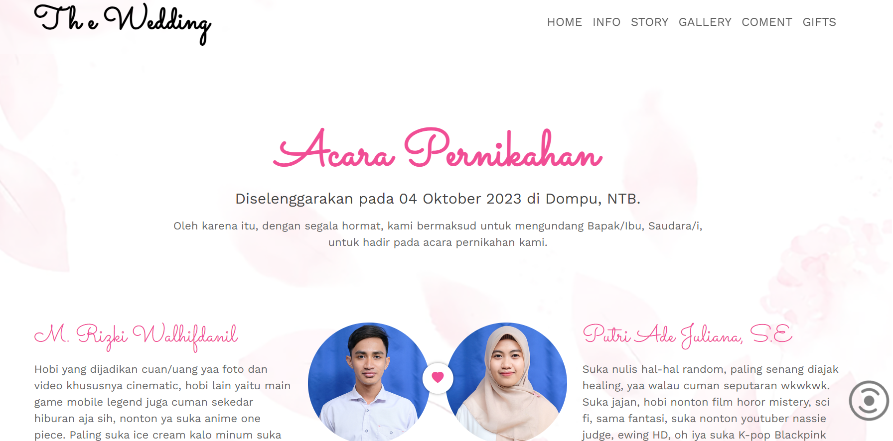
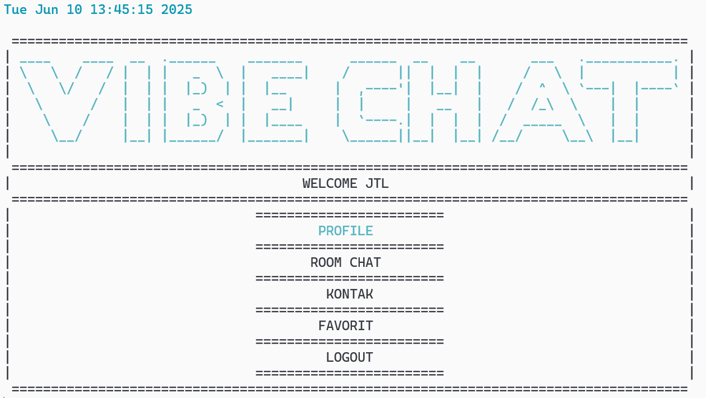
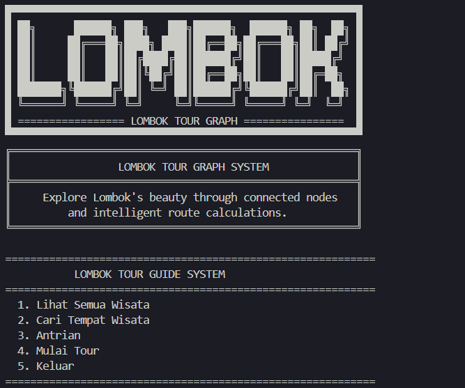

Bahasa Pemrograman
- C++ (Dasar)
- Java (Dasar)
- HTML & CSS (Menengah)
- JavaScript (Sedang dipelajari)
NIM: F1D02410074
Halo! Nama saya Muhamad Fatio Sodirin, mahasiswa semester 4 jurusan Teknik Informatika. Saya memiliki ketertarikan di bidang pemrograman web.
Saat ini aktif belajar HTML, CSS, dan JavaScript.
Portofolio ini adalah Tugas 1 & 2 dari Mata Kuliah Pemrograman Web.

Website undangan digital untuk pernikahan abang saya. Dibuat menggunakan HTML, CSS dan JavaScript.

Aplikasi chat sederhana berbasis terminal menggunakan C++ dengan menerapkan 6 modul praktikum. Proyek kelompok mata kuliah Algoritma dan Pemrograman Dasar.

Aplikasi wisata Lombok menggunakan struktur data graph dengan Algoritma Dijkstra. Proyek kelompok mata kuliah Algoritma dan Struktur Data.